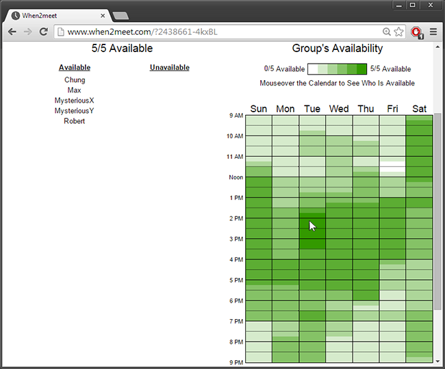
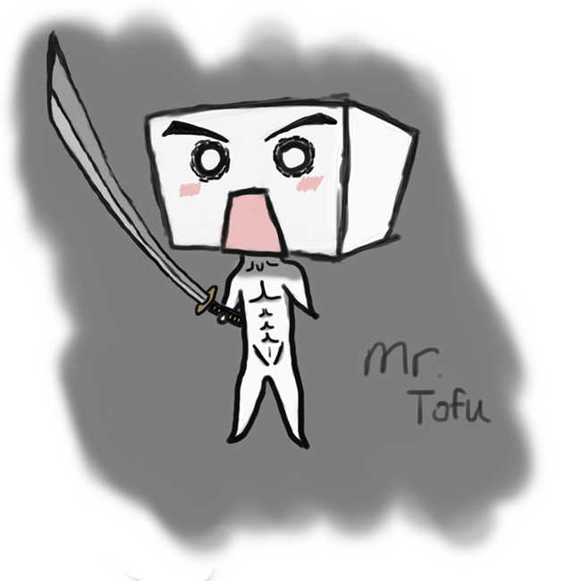
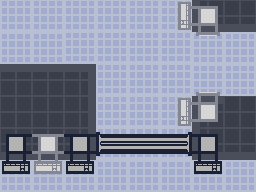

Last edited 25 Dec. 2014
Autumn is a roguelike game about a hacker named(?) Autumn trying to to escape from swarms of hostile robots. Also, there is a Tofuman. There is no playable demo as of yet.
I'm a bit hesitant about writing for ongoing projects, but I suppose it wouldn't hurt to give quarterly updates. I don't think I'll go too in-depth into details right now. I'd rather leave that towards the end when I can wrap everything up nicely. We'll see how things turn out though; I'm just going to write whatever I feel is relevant right now.
So first I think I'll talk about my personal role inside of this project. My role this time around is definitely different than what I've done on previous projects. I've contributed a lot less to this one than I think I could have, for a variety of reasons. For one, I wasn't even sure if I wanted to do a VGDC project this quarter. I'm in a Capstone course right now, so I think ideally I really should be focusing all my free time on that. However, as I owe a lot to VGDC, as I've been on a project with them every single school quarter, and because I'm an officer of the club, I felt it was necessary to join a project to continue tradition.
Out of all the project pitches this quarter, I really didn't have a strong preference for a particular one. Ideally, I think I wanted to do a networking project since that's something I'm interested in. Nick's, another officer of the club, project fit my criteria the most, and it seemed the most fleshed out and well organized. However, in the end, I decided that what I wanted to do is take more of a mentorship role and help start up a project rather than furthering my individual interests. I was planning on doing less work and moreso just be an all-rounder mentor guy that helps around when he can.
My motive mainly came from the fact that as a club this quarter, we tried to not throw new teams and new members of the club immediately into development frenzy and hope they survive by the end with completed projects. That's something we've done all my years at VGDC in the past, where we would always by tradition hold a game jam in early fall quarter. A lot of new members would end up getting extremely frustrated and put off from their tough experiences as they literally had no idea what they were doing, and the club would lose a great deal of members after these jams.
This year, we decided we would not hold a game jam in fall quarter. Instead, we're hoping to slowly ease players into game development and give them a quarter's time to develop their skills. At first, I was really put off with the idea, because I'm a huge, huge fan of game jams and really was sad to not see one this quarter. But after working with my team and seeing how the club's done so far this quarter, I'll have to reverse my opinion entirely and fully support what we're doing now.
In fact, I'd go as far to say that we have to do more to promote this gradual teaching environment and help teams even more than we're doing now. I feel that it is really important that every team has a mentor/experienced developer on their team, who's there to promote discussion, guide the development process, and teach tools and ideas to the group. Without this leader, teams are going to really, really struggle figuring out what to do, breaking the ice, and just in general get anything going. It doesn't help anyone when parts of a team start to have pent up frustrations that they don't really want to bring up, and it's never good to have such a poor mindset going forward.
One thing I'm definitely going to push for next quarter/year is to make sure that new projects always have experienced project leads that have started and worked on plenty of projects in the past. This quarter we selected project pitches based on game type and game idea. This involved widdling out projects that were too out of scope, including many 3D games. While this is definitely an important constraining criteria, I want to put more emphasis on the team leads themselves, to make sure that these leaders know what they're doing. And if not the leaders, at least let there be dedicated mentors to help the whole team progress along.
In my experience with Autumn, I think I did a fair job giving everyone a good push forwards. The first thing we did was organize communication. We had a great ice breaker dinner session where we just did mostly small talk and introduced ourselves to one another. We organized Facebook contacts quickly and got off to a great start getting everyone on the same page. We used/use when2meet for all our scheduling needs, probably the greatest online scheduling tool I've ever come across. A friend from VGDC introduced me to it some time ago and it's been really awesome to use, easier to navigate than its comparisons whenisgood and Doodle.
when2meet
With that, we decided a time to meet on the weekends where we could get together and have a two to three hour work session. Later in the quarter, we felt it was important to have additional meetings, so we broke up into two teams and met with our smaller group once more during the weekdays. I'd say only around half or less show up for the meetings, but overall, we still communicate back and forth and remain in contact with each other outside our meetings. I think we've lost a total of 1 or 2 members over the quarter. Out of a dozen, that's really good, and I'm more than happy how we've worked this quarter considering the past teams I've been on.
Alright. Now let's get into the thick of the things. Starting the quarter off, we went pretty slowly. I introduced everyone to Git and Trello. Git I think we still have problems with. Some people don't exactly know how to commit/push and all that jazz, but I think we've been pretty vocal about getting help for it, and for the most part we haven't ran into problems with it. We are using Unity, however, so we do get some random merge conflicts on our main Unity scene from time to time.
As for Trello... it's been kinda rough to get everyone to use it. Especially for us in our early stages, we really don't have too many detailed tasks to put up, so it's somewhat been abandoned. Despite that, I think some of us still actively use it. It's a great way to keep track of even your own tasks. Hopefully next quarter when we can put up more detailed/tasks we need to do. Task management is a surprisingly difficult thing to do. Even this quarter, a lot of us ran out of things to do, and we weren't sure what to assign to one another. One person may have a butt load more work than another; someone may have finished their tasks too quickly or too late; etc. I hope using Trello more will help our problems here.
We decided to use Unity because we wanted to use this project as a learning experience. A few of us (thank god) had some experience with it, but I was not one of them, which I think hurt us. I was gonna look up tutorials and stuff, and I even assigned tutorials as our tasks, but I... I just I don't know, kind of never got around doing it. So it was tough to give any advice to any of the programmers because I really didn't know how to navigate Unity at all (sorry). I swear I'll start going through tutorials this break... but I haven't been doing that later... haha... I'll probably get around to it towards the end of break, after this break's game jam.
It's really nice to see a few of our programmers step up to the plate and lead the project in my place. I gave as much advice as I could for art as possible, since that's where most of my knowledge is. We decided to use a pixel art style, which I think helped us out a lot in the end. The barrier of entry to pixel art is a lot less than standard art because all it requires is a mouse rather than a drawing tablet. We ended up having like 3 and a half artists on our team since someone just decided, hey, I want to do X or Y, and he did it.
Now to start talking about the game design itself, I feel like I singlehandedly pushed the game into a direction that it wasn't meant for. What we ended up with was I think something pretty interesting, but forced on my end. Originally, the game was called Project Time Game. The pitch was that you ran around for around ~30 seconds avoiding enemies before a powerup would spawn. Once picking up the powerup, you could use it to wipe out the enemies.
The pitch reminded me of a similar game that was made in VGDC in the past, DayBreak. DayBreak was a really brilliant idea. In the day time, you broke down tombstones, and at night, ghosts from the particular tombstones would come out and attack you. Different ghosts would spawn depending on which tombstone you broke down. If you got hit with too much damage, you lost. It was a really intriguing idea that I wanted to see fleshed out, so that's why I chose Time Game as one of my preferred projects.
DayBreak
For the first couple weeks we tried to constrain our ideas down and try and solidify our game design. The first thing I suggested was that we make an art style similar to Nuclear Throne, simply because of the fact that it was easy to implement. Nuclear Throne is a top-down camera view game, but the characters were displayed moved in profile. The top-down view was important because it fit the original pitch. The 3/4 profile view was important because it'll help conserve art assets, something I knew always doomed projects. Artists would literally only have to make one facing direction's worth of art. Moving animations would be less of a pain.
Nuclear Throne
We decided to follow in Nuclear Throne's style as well and do pixel art, which, as mentioned before, helped make the art process easier. For these reasons, art is not and most likely will not be a major concern for the future. We played around with some setting ideas, one of them being a sci-fi idea about fighting against robots. Some of us felt that was too kind of generic though, so we weren't exactly sold on that idea. It wasn't until later when we thought of other mechanics that we ended up going with this.
Where Nuclear Throne helped us for art style, it did not help us in gameplay. It was a way too action-packed game compared to what we want, a time reliant game. Thus I thought of other games for inspiration and looked at other areas we could improve. Next, I suggested a simple goal for the game that we could shoot for maybe quarter 2 demoing. For this, we decided we would structure the game somewhat similar to Tatami Galaxies, a game I worked on. Our goal is to shoot for ~5 levels to play through, where the player will aim to get to an exit of each level and eventually the end of the game.
And on the topic of robots, I thought, okay, what would be an interesting skill that you could do every ~30ish seconds? How about hacking? That seemed pretty cool, and I think the team liked it. I think our team lead was particularly interested in that, he went right to work creating some concept art of our main hacker character and gave him a name and a name for our group/project, Autumn.
To be honest, I don't think the name fits very well, because I don't think we've incorporated anything else with Autumn, so it's just kind of this odd part of the game standing on its own. I liked a name that someone else brought up, I think it was Cyberfall. I mean, it's whatever, names aren't gonna be a huge issue I imagine. It'll help solidify the game's identity and our group's identity I suppose. We'll see next quarter if we can decide on a name better or fit the name better to what we have.
And on the topic of things that don't fit. I feel I'll have to now talk about Tofuman. What is Tofuman? Well, to be honest, I'm not even sure myself, but from what I understand apparently he's supposed to be the main character's sidekick now. And there are different versions of Tofuman too, like a stinky tofuman or sticky tofuman that give you different skills. I'm not really sure how he got into the game, but I think there was just one person on our team that randomly made him. Anyways, now we have to somehow fit Autumn, Tofuman, and hacking together and make everything coherent.
Tofuman
Back to more of a reality, after thinking about what we had at the time, I think there were a few things I wanted to spice up. I didn't like how it was simply a "just-keep-dodging-until-your-power-is-back-up" kind of game. Where you really didn't have any capabilities to fight back or any other objective other than keeping yourself alive. So we played around with a couple ideas. Someone suggested you have some skills that allow you to pushback/defend against the enemies but not actually damage them. I thought that was pretty interesting.
Another thing we wanted to add were gates. Gates would block your way and you would have to expend your cooldown to open them. However, that seemed too harsh thinking about it, because then you wouldn't be able to defend against enemies. So after some time and giving it some thought, I suggested instead of using time as your resource, why don't we do something like energy that you have to expend to use your skills?
Example of our current gates
The idea was that killing enemies or opening some chests would drop energy that the player could pick up. This gives players another objective outside of mindless killing and avoid getting killed. Once they reached a certain amount of energy, they could expend it to hack into an enemy or a gate or a drone or chest. Health and energy would regenerate over time. This kind of threw away the idea of time entirely, but still sets a similar kind of limiter on your skills. We decided to go with this.
Some of this inspiration came from Risk of Rain, where players picked up experience boosts and coins to level up or buy items, respectively. I condensed the two ideas down to a single energy bar that one could use. We actually took a quite a bit from RoR overall. We are probably going to stick quite similar to its UI system with its display of health, energy bars and skills.
Risk of Rain
I think with all these ideas set within the first couple weeks, we had a good idea of what to achieve going forwards. I probably brute forcibly pushed a lot of these ideas, but there doesn't seem to be too much backlash from everyone, so this seems fine for now. Our first couple meetings were spent with me pretty much doing all the talking. I felt like I was suffocating most of the discussion, and some people often had their points left out or not addressed.
However, we decided at some point that we'll start also having work sessions during our meeting times as well, and that really I think really helped bond our team together and invite more discussion between us. We would break off into our own smaller groups and have a swell time working on our individual tasks or just talking about random things in general. I highly suggest having work sessions. It's just tremendously helpful for getting people to know, work, and interact with each other.
After the first couple of weeks got started, my own productivity dropped off significantly. I was always around to help if we needed some tips on making sprite sheets or if we needed some help in thinking of ideas or some advice with Git, but I didn't actually do too much myself. I did all the environment assets, i.e. tiles for the background, gates, and walls. I did a little bit of programming for the Camera in the game, with what I learned from Tatami, and that's honestly I think pretty much it. If you can even count it, I did some last minute bandaid work to put gates into the game.
The others put in the main character, hacking, a ranged enemy, menus, UI, random enemy spawning, and levels. A lot of rough edges on the different part, but for our first quarter goal of a prototype, I'd say that's pretty good. We'd like to put in more enemies. One of our artists is I think close to finishing that. Hacking should work more smoothly, but we do have it working to an extent in the current build. We'll need to add in the character push back animations.
I took a look at level design to help us out. We decided to use Tiled and Tiled2Unity to make our levels. I think actually making the levels isn't that bad, it's just matter of painting over whatever tiles we need. Actually transferring it over into the game, however, seems to be a challenge. We'll need some way to properly read in the files, I imagine. Right now, we're using some weird, arbitrary scaling amount to position it correctly. We need it to be pixel perfect, especially since we're using low pixel count art.
I think that roughly covers up this quarter. Hopefully I'll get that Unity studying in this break, and we're good to go starting next quarter. Time will tell...